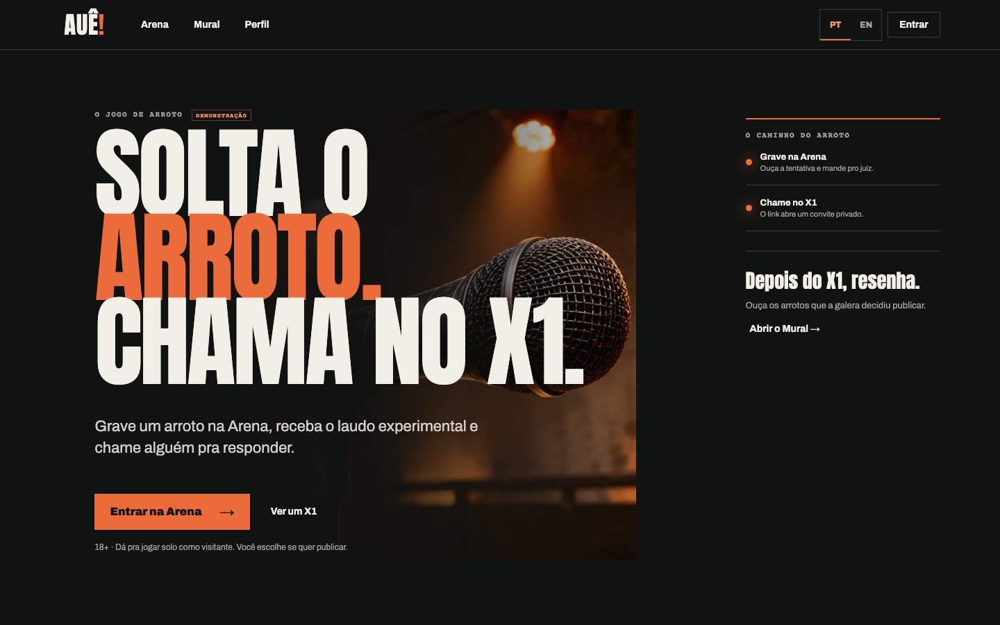
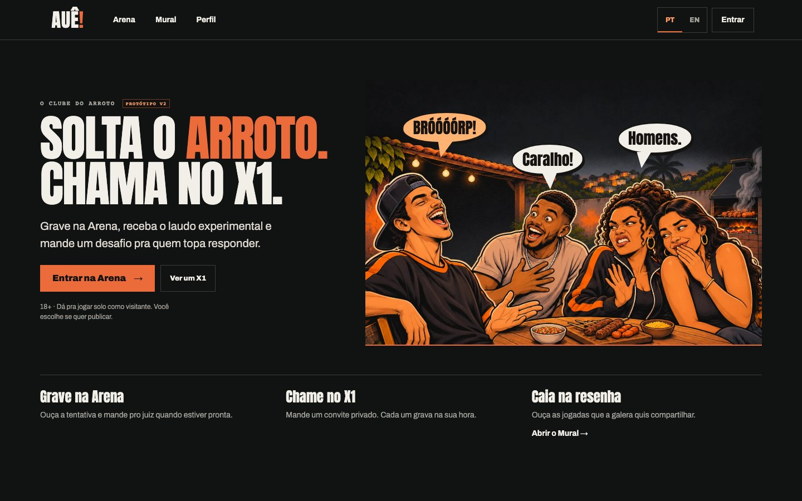

Auê! da V1 à V2
Capturas no mesmo estado do jogo, com dados de demonstração. Abra uma imagem para ampliá-la.
A foto de microfone dá lugar a uma roda de churrasco, com três balões que mudam entre PT e EN. O convite, a Arena e a resenha aparecem na primeira página.
V1

V2

Qual laranja combina com o clube?
Os dois links abrem a mesma V2. A cor muda nos botões, nos estados ativos e nos players.